Sponsorizza PAC '15.
I ricavati verranno usati per l'organizzazione stessa dell'evento, premi per i pitch e per l'hackaton delle idee. Vedi QUI per ulteriori informazioni.
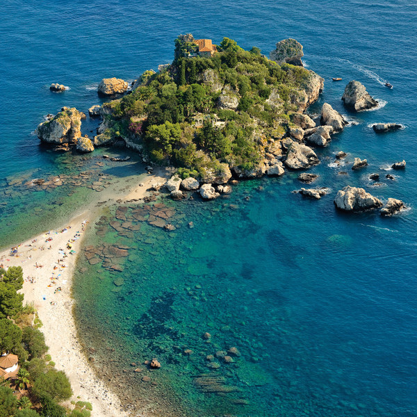
28 Settembre
Inviaci il tuo pitch!
Hurry up! Mandaci la tua candidatura per i pitch.
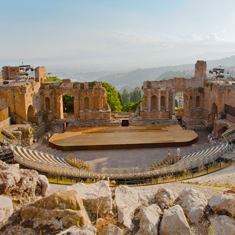
30 Settembre
Inviaci la tua presentazione
Manda il titolo della tua presentazione e una breve descrizione (max 100 parole).
30 Settembre
Registrazioni Chiuse
PAC 2015
Catania
Sicilia
Keynote
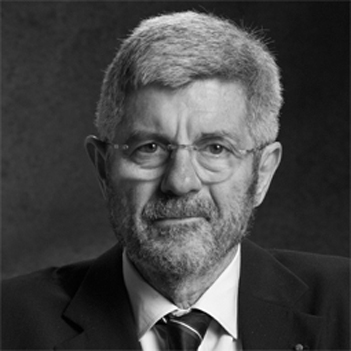
Giovanni F. Bignami
Presidente INAF, motivational speaker
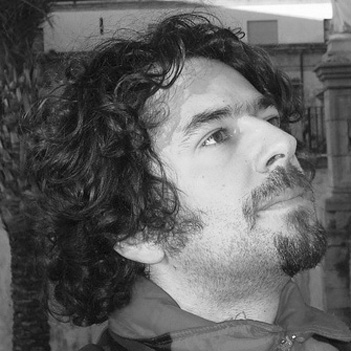
Salvatore Sanfilippo aka Antirez
Redis Labs
Ospiti
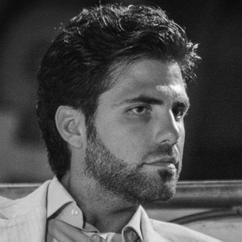
Aldo V. Pecora
Ammazzateci Tutti, CheFuturo!
Grazia Umana
Osservatorio Astrofisico Catania
Patrizia Caraveo
INAF, CheFuturo!
Dario Maccarrone
Direttore TIM #WCAP Accelerator Catania
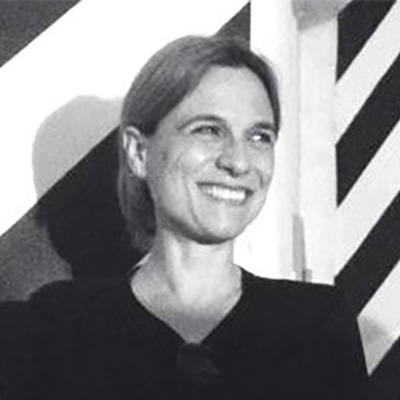
Paola Di Rosa
Mentor SVP Foundation, Fondatrice AtFactory
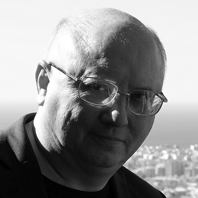
Ugo Becciani
Astrofisico Computazionale, INAF
Prof. Sebastiano Battiato
Unict
Team
Simone Ivan Conte
PAC, Dottorando
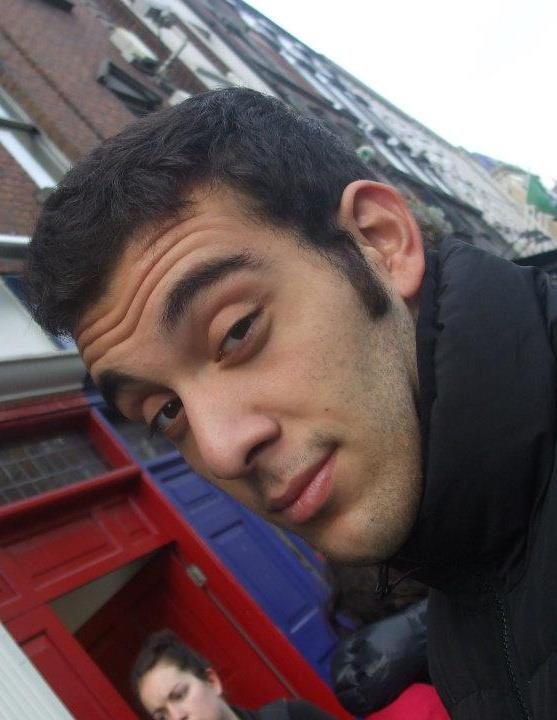
Giuseppe Parasiliti
PAC, Studente
Giulia Bignami
PAC, Dottorando
Gabriele Viglianisi
PAC, Studente
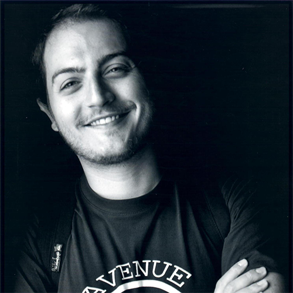
Antonio Musumeci
YoutHub Catania
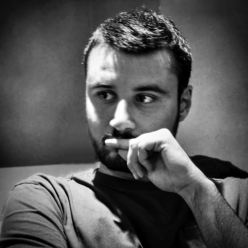
Francesco Marino
YoutHub Catania
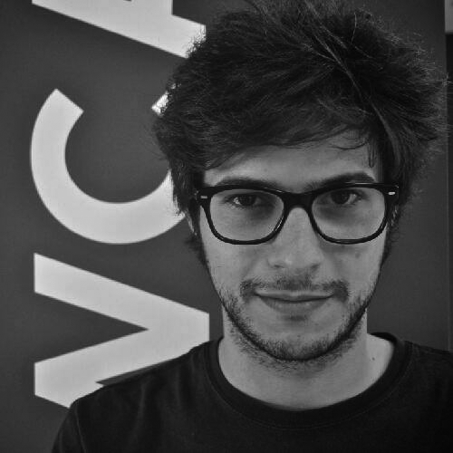
Omar Amato
YoutHub Catania
Francesco Spampinato
YoutHub Catania
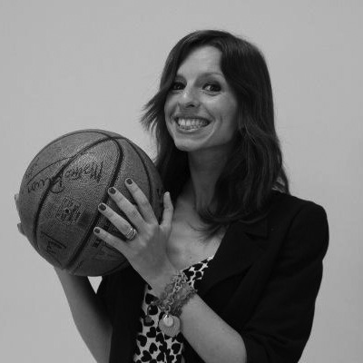
Danila Zammitti
TIM #WCAP Accelerator Catania
Nessun membro del team e' stato maltrattato durante l'organizzazione dell'evento. Supportateci!
Cosa sono Programmatori a Catania e YoutHub Catania?
Programmatori a Catania é un gruppo Facebook nato due anni fa da un gruppo di amici appassionati d'Informatica e ora conta piú di 600 membri che ogni giorno promuovono idee e discutono problemi informatici.
YoutHub Catania é un'organizzazione No-Profit in cui giovani appassionati d'innovazione e con un forte spirito imprenditoriale si incontrano per condividere, sviluppare e realizzare le proprie idee.
Cosa significa PAC?
Originariamente PAC é stato scelto come acronimo per Programmatori a Catania. Tuttavia l'evento PAC non é limitato al territorio catanese, ma a tutta la Sicilia.
Non sono un informatico. Posso partecipare?
Certamente. L'evento é mirato a tutti coloro che sono pieni di idee e/o vogliono conoscere il mondo delle startup e del settore informatico siciliano.
Ho un'idea fantastica e sto cercando qualcuno che si unisca a me.
Fantastico! Per innovare e creare un'idea, il primo passo é condividere l'idea con il resto della comunitá. Potrai presentare la tua idea con un pitch di massimo tre minuti. Durante le due giornate ci saranno dei brevi workshop con degli esperti per aiutarti a creare il tuo pitch. Il vincitore della competizione sará premiato con un contributo monetario.
Vorrei sponsorizzare l'evento, ma non mi é chiaro come verranno spesi i soldi.
PAC '15 é un evento No-Profit e tutti i soldi ricevuti dagli sponsor saranno re-investiti sull'evento.
Ecco come andremo a spendere i soldi:
Rinfresco - cibo + bevande
Premi per i pitch migliori
Premi hackaton
Rimborso spese dei viaggi per i keynote (totale o parziale)
Volantini e magliette
Cosa posso fare per sponsorizzare l'evento in maniera unica?
Ci piace pensare che ogni sponsor sia unico a modo suo. Tuttavia di sicuro ci sono alcune opzioni per ottenere una visibilità diversa durante l’evento. I nostri suggerimenti sono la sponsorizzazione di un premio per il miglior pitch o il pitch che presenta l’idea con maggior potenzialità. Oppure potrebbe essere possibile sponsorizzare un eventuale stage con voi.
Ulteriori idee sono piú che benvenute.
Posso avere uno spazio per presentare la mia startup/azienda senza aderire a un pacchetto?
Purtroppo no. I pacchetti sono necessari per poter re-investire nel rinfresco ed altri tipi di spese. Quindi é possibile avere uno spazio durante le presentazioni solo aderendo ai pacchetti Platinum, Gold, Silver, Bronze e Green.
Rappresento un'organizzazione No-Profit e vorrei aiutarvi. Devo pagare?
Assolutamente no. Le organizzazioni No-Profit che vorranno aiutarci nell'organizzazione dell'evento saranno incluse tra i GREEN sponsor.
La vostra organizzazione avrá la possibilitá di presentarsi per 8 minuti durante l'evento.
Le donne hanno vita dura nella Silicon Valley dove rappresentano appena il 15% dei lavoratori.
Eppure Sheryl Sandberg, numero 2 di Facebook, sostiene che la presenza femminile nelle posizioni che contano ha effetti benefici sul profitto aziendale: i risultati migliorano e i guadagni crescono.
Secondo Sheryl, men are more confident, women are more competent.
Date: 02 Ottobre 2015
Ospite: Aldo V. Pecora
Social Innovation
Date: 02 Ottobre 2015
Ospite: Paola Di Rosa
TBA
Programma
Programma dell'evento.
Giorno 2 Ottobre 2015
09:30-10:00
Registrazione/Networking
10:00-10:40
Welcoming Intro
Nota introduttiva di Simone Conte (~5 min)
YoutHub Catania (~5 min)
Dario Maccarrone - Tim #WCAP Accelerator Catania (~5 min)
Ugo Becciani - INAF (~5 min)
Alessandro Costa - Tecnologie Informatiche @INAF Catania (8 min)
Prof. Battiato - UNICT (~5 min)
10:40-11:10
Networking
11:10-12:00
Ospite
Aldo V. Pecora - Social Innovation (15 min)
Presentazioni
Paradigma (15 min)
EESTEC (8 min)
Carlo Leonardi - Annuncio di CataniaJS (5 min)
12:00-13:00
Rinfresco/Networking
13:00-15:10
Presentazione
Rimlight Studios (20 min)
Workshop
Come migliorare il proprio Pitch - WCAP - (45 min)
Breve Pausa (~5/10 min)
Keynote
Prof. Giovanni Bignami - "Ma andate tutti fuori dalle scatole...!" (40 min)
15:10-15:20
Breve Pausa
15:20-16:20
Ospite
Paola Di Rosa - Digital Solution 4 Social Innovation (15 min)
Presentazioni
EdisonWeb (20 min)
GDG Catania (5/8 min)
Ospite
Patrizia Caraveo - La donna e la tecnologia (15 min)
16:20-16:30
Breve Pausa
16:30-17:40
Presentazioni
Pane & Design (12 min)
SavelGO (8 min)
Neodata Group (20 min)
YoutHub Catania (8 min)
Studiare Digitale Onlus (5/8 min)
17:40-18:00
Networking
18:00-19:00
Workshop
Emanuele Coniglione - I segreti del business plan (45/50 min)
Sponsors: BaxEnergy, TIM #WCAP Accelerator Catania, ATFactory
15:00-19:00
Hackaton delle Idee
Sponsor principale: BaxEnergy
Networking
Dal web alla realta': conosci la comunita' IT Siciliana.
L'evento PAC '15 nasce dal gruppo Facebook Programmatori a Catania che conta oltre 600 utenti da Catania, dintorni e il resto d'Italia. Lo scopo del gruppo é quello di creare un ambiente di dialogo, permettere ai propri utenti di scambiarsi idee, opinioni e consigli, pubblicizzare startup e iniziative varie. Con PAC '15 miriamo a portare gli utenti del gruppo, e non solo, dal web alla realtá. Sará un'ottima occasione per conoscersi e creare dei rapporti professionali.
Investitori
Potenziali Angel Investors all'evento.
PAC'15 e' mirato ad appassionati di informatica, ma soprattutto ad innovatori e giovani startups. Con noi avremo dei potenziali angel investors all'evento.
Ognuno degli sponsors (Platinum e Silver) di PAC'15 sara' un potenziale investitore, in aggiunta alla Wenext srl. Ulteriori informazioni su altri potenziali investitori presenti all'evento saranno rese pubbliche nei prossimi giorni in questo sito e i nostri canali social.
Condivi le tue idee, il tuo prodotto, la tua startup con la communita'.
Il momento cult di PAC15 saranno le presentazioni, dove aziende e startup presenteranno i propri prodotti, la propria filosofia, le proprie idee.
PAC15 e' un evento no-profit, ma abbiamo bisogno del vostro aiuto per far si che diventi reatla'. Diventa un nostro sponsor e otterrai maggiore visibilita' durante l'evento e molto altro!
Presentazione
Menzione all'evento
Menzione nel sito
Sponsor Hackaton
Platinum
€200
20 min
X
X
X
Gold
€150
15 min
X
X
X
Silver
€100
12 min
X
X
X
Bronze
€50
10 min
X
X
Green
€30
8 min
X
X
Workshops
Imparare, crescere e innovare insieme.
Available Soon. Stay tuned!
Pitches
Hai un'idea? Cerchi dei collaboratori e/o degli investitori? Battaglia con un pitch!
Presenta la tua idea in meno di 3 minuti! Parlaci del perche' la tua idea e' innovativa, delle sfide di fronte a te, e di cosa potrebbe diventare in un lontano futuro!
Avrai a disposizione altri 3 minuti per rispondere alle domande della giuria, che votera' i pitch migliori. Il miglior pitch sara' premiato con una somma in denaro e altri premi per i pitch migliori.
Regolamento PAC15 Pitch Competition
Il 3 Ottobre, durante l’evento PAC15, startup e giovani innovatori avranno l’occasione di battagliarsi in una gara di pitch (max 3 min) per un premio in denaro di €1000 - offerto dalla BaxEnergy - fino a tre spazi di co-working presso il TIM #WCAP Accelerator Catania per tre mesi e 1 biglietto per il Lean StartUp Machine Workshop di Palermo a Gennaio offerto da ATFactory.
Lista dei membri del team, con relativi ruoli e indicando il referente principale
Executive summary del business plan (max 2 pagine - clicca qui per vedere come scriverne uno), che spieghi il problema dal quale si è partiti, la soluzione proposta per risolverlo, il mercato di riferimento, i competitors, il go to market, la user/client acquisition, il revenue model ed il team.
Le idee/startup migliori verranno selezionate per poter partecipare alla gara di pitch del 3 Ottobre, durante l’evento PAC15 presso la sede TIM #WCAP Accelerator Catania.
L’executive summary verra’ valutato dal board dell’evento PAC15, sulla base dell’ innovatività dell’idea proposta, realizzabilità e competenze del team.
I team che verranno invitati all’evento potranno usufruire dei workshop che si terranno durante l’evento per poter sviluppare e migliorare la propria idea prima del pitch stesso.
Tutti i team riceveranno una risposta entro il 30 Settembre. I team accettati dovranno iscriversi su eventbrite - per ogni membro che sara’ presente all’evento. I team che non verranno accettati potranno comunque prendere parte all’evento, in quanto ci saranno tante occasioni per incontrare potenziali investitori e/o collaboratori.
Questa è l’occasione che aspettavate per dare forma al vostro sogno, non perdetela!
Hackaton delle Idee
Show-off your skills.
Partecipa come individuo o in gruppo (max 3 persone) in una mini-hackaton di 3-4 ore.
L'hackaton delle idee e' un evento breve, dedicato ad esperti d'informatica, web, design, business e innovatori. L'hackaton delle idee, quindi, e' rivolta a un pubblico non necessariamente tecnico e sara' a tema libero. Sara' possibile partecipare in gruppo o individualmente, su un'idea nuova e innovativa. Data la breve durata dell’hackaton, si potrà scegliere se presentare la propria idea sotto forma di prototipi/mock design/business plan/infographics/etc.
Ogni gruppo/individuo avra' a disposizione un breve lasso di tempo (TBA) per presentare l'idea che ha sviluppato durante le 3/4 ore dell'hackaton delle idee.
Una giuria di esperti votera' i progetti migliori e piu' innovativi e riceveranno dei premi offerti dai nostri sponsors.
Simone Massaro
BaxEnergy, Rimlight Studios
Ci parli un po’ di lei e della sua opinione su sviluppo e giovani.
Mi chiamo Simone Massaro e sono un ingegnere di originese Catanese prossimo ai quarant’anni. Dopo avere trascorso la mia adolescenza a Catania ho deciso di mettere a frutto la mia passione per la tecnologia emigrando negli Stati Uniti lavorando presso alcune delle maggiori aziende del settore Software / IT. Nel corso degli anni ho appreso moltissimo ed ho avuto la fortuna di lavorare su progetti importanti in giro per il Mondo, a fianco di persone dotate di grande immaginazione e talento. Ho trascorso molti anni risolvendo sfide tecnologiche nei settori più diversi, ed cimentandomi con applicazioni e progetti di varia natura, dall’automazione delle montagne russe di Disneyland, fino alla piattaforma di lancio dello Shuttle, passando per progetti di automazione di metropolitane, aereoporti, reti ferroviarie, catene di montaggio automobilistiche, stabilimenti chimici e farmaceutici, impianti petroliferi, gasdotti e molto altro ancora: tutti i miei lavori però sono sempre stati accumunati dalla necessità di risolvere sfide tecnologiche importanti. Nel corso degli ultimi venti anni ho sempre desiderato trovare un opportunità di applicare queste conoscenze a vantaggio del mio paese natale, l’Italia. Dopo vari tentativi falliti di convincere investitori terzi a fare qualcosa in Italia, ho deciso di provare da solo e di rientrare in Italia per convertire la mia esperienza nel lancio di nuove iniziative imprenditoriali ad alto contenuto tecnologico, aprendone alcune proprio a Catania. Qui ho trovato delle condizioni ancora fertili, anche se in misura minore rispetto al passato, con tanti giovani desiderosi di mettere a frutto il loro talento nel settore tecnologico. Credo fortemente nella possibilità di fare impresa in Italia ed in particolare in Sicilia, e per questo ho deciso di investire in prima persona sui giovani lanciando alcune software house che nel giro di pochissimo tempo si sono affertamate nei rispettivi settori, creando lavoro per molti, e supporto qualunque iniziativa che vada nella direzione di creare sviluppo per i giovani su cui credo tantissimo.
Cosa consiglierebbe ad un potenziale partecipante preoccupato di condividere le proprie idee? e quali ritiene che siano gli step necessari per realizzare un’idea di successo?
Le idee, specie quando sono giovani ed ambiziose, sono anche molto fragili e vanno nutrite in modo adeguato. Non bisogna avere paura di condividere le proprie idee, perchè senza questa condivisione non si può trovare il supporto necessario per la loro crescita, che invece è possibile trovare in iniziative quali il PAC 2015. Sono eventi come questo che consentono di mettere in luce idee che altrimenti rischiano di rimanere sogni nel cassetto. Il PAC 2015 rappresenta anche un modo per confrontarsi e ricevere feedbacks che possono rivelarsi fondamentali per evolvere l’idea nella direzione giusta. Premesso ciò esistono tanti strumenti per la tutela delle proprie idee, che possono e debbono essere utilizzati, quali ad esempio la registrazione dei marchi che si intende proporre, o l’utilizzo di clausole di confidenzialità nei contratti etc..Indipendentemente da tutto, il successo di un idea non va lasciato al caso, ma va letteralmente ingegnerizzato, pianificato a tavolino, avvalendosi anche dell’aiuto di consulenti ed esperti. Ad esempio una pratica molto comune negli USA è quella di avere un gruppo ristretto di advisor dotati di esperienza che possano aiutare a trutturare l’idea ed a lanciarla sul mercato, ed esistono tanti costrutti per ottenere il supporto di persone capaci senza grandi costi, come ad esempio cedendo delle opzioni o parte dei diritti sull’idea. Il primo step fondamentale rimane comunque quello della stesura di un business plan chiaro e conciso che possa essere utilizzato per presentare l’idea ad altri, ma che ha in realtà una valenza enorme per l’ideatore stesso in quanto forza a fare una serie di esercizi di pianificazione finanziaria, di marketing, di project planning, che posso rivelarsi fondamentali per aggiustare e correggere il tiro. Il business plan è anche un ottimo strumento per confrontarsi con potenziali finanziatori o partners che si vuole attrarre all’interno del gruppo di advisors. Esistono degli ottimi testi facilmente accessibili che possono servire da guida per la stesura di un business plan, ed anche se il proprio business plan si rivelasse un disastro è comunque un esercio che vale la pena fare per apprendere le basi e per correggere il tiro per la prossima idea.
Ritiene che questo evento, come tanti di questo tipo, potrebbe rappresentare un passo importante per trasformare un'idea innovativa in realtà?
Decisamente si, soprattutto per la per la presenza di alcune aziende che anno mostrato di essere fortemente interessate all’innovazione e posso aiutare ad incubare l’idea, o magari diventarne sponsor ufficiali.
Quali sono gli elementi fondamentali, secondo lei, per portare giovanni, innovazione e sviluppo insieme?
Gli elementi fondamentali per fare nascere nuove imprese che innovino e sviluppino sono due: da una parte l’università, ed il mondo accademico in genere, che ha il compito cruciale di preparare i giovani di oggi per paracadutarsi nel mondo del lavoro senza trovarsi disorientati o addirittura perduti; dall’altra parte abbiamo la volontà dei giovani stessi che deve andare oltre quello che oggi offre il territorio, che debbono rendersi conto di essere non solo cittadini Italiani ma anche Europei e del Mondo intero. La conosce delle lingue è fondamentale per trovare opportunità e riuscire a sfruttarle al meglio. Inoltre bisogna avere tanta voglia di imparare da chi ha qualche anno in più perchè solo nel confronto con le generazioni precedent possiamo migliorarci imparando dai loro sbagli invece di ripeterli ancora.
24/09/2015
Giovanni Bignami
Presidente INAF, motivational speaker
Ci parli un po’ di lei e della sua opinione su sviluppo e giovani.
Ho fatto lo scienziato tutta la vita e poi quello che fa lavorare giovani scienziati, permettendo loro di sviluppare le loro nuove idee con finanziamenti sia per loro sia per le industrie coinvolte. La mia "opinione" è entusiasticamente positiva sui giovani e sulla loro voglia di fare, soprattutto quando hanno voglia di buttarsi e prendere rischi. Purtroppo lo "sviluppo" non segue così facilmente, sia dal pubblico, sia, peggio, dal privato, in Italia.
Quali benifici potrebbero trarre giovani talenti partecipando a questo evento?
Prima di tutto nel convincersi a pensare fuori dalla scatola, un cambiamento da evoluzione darwiniana repentina, da farsi in una sola generazione. Chi non cambia è perduto. Poi che per riuscire a portare a casa un bel pesce ci vogliono pazienza e tanti ami ben buttati. E che gli ami si buttano meglio insieme, quasi sempre, stando in una barca nella quale tutti remano dalla stessa parte. E poi si conoscono persone che sanno apprezzare il talento (che sappia farsi apprezzare...) e che abbiano voglia di investire. Difficile, ma non impossibile.
Cosa consiglierebbe ad un potenziale partecipante preoccupato di condividere le proprie idee? e quali ritiene che siano gli step necessari per realizzare un’idea di successo?
Mai paura di condividere le idee. Se sono buone, vanno, e in due o più vanno ancora meglio. Però mai rubare le idee degli altri e cercare di non farsi rubare le proprie (basta metterci dentro un errorino, dire che c'è ma non dire quale...). Il primo passo per la realizzazione di un'idea è la presentazione, facile, che la capisca la propria nonna ma che riesca a tenere sveglia la nonna stessa. Poi un business plan, ottimista quanto basta e tanti, tanti contatti, a tutti i livelli, molto più di quanto una possa immaginare, sempre.
Ritiene che questo evento, come tanti di questo tipo, potrebbe rappresentare un passo importante per trasformare un'idea innovativa in realtà?
Certo che sì, posto che 1) l'idea ci sia 2) che la nonna non si addormenti 3)che si costringa, con argomenti affascinanti, a giocare insieme anche chi ha il magico potere di far diventare realtà visibile la realtà che hai dentro.
Quali sono gli elementi fondamentali, secondo lei, per portare giovanni, innovazione e sviluppo insieme?
Iniziative come questa, e tanta buona volontà e pazienza. E poi mirare alto, che più in alto non si può.
24/09/2015
Riccardo D'Angelo
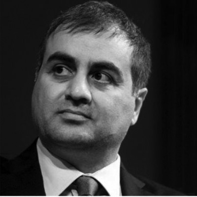
Edisonweb
Ci parli un po’ di lei e della sua opinione su sviluppo e giovani.
Irrazionalità, incoscienza, coraggio, idealità, sono alcuni dei sentimenti che caratterizzano l'età giovanile. Un contesto, una nazione, una economia senza la prevalenza di questa spinta propulsiva è destinata al declino. Spinta propulsiva in grado di trasformare ogni limite, ostacolo o fallimento in risorsa. Quando nel 1995, poco più che venticinquenne, fondai Edisonweb, con l'obiettivo di sviluppare applicazioni di eccellenza per il Web, a Mirabella Imbaccari, in un luogo dove la banda larga sarebbe arrivata dopo 14 anni, a prevalente vocazione agricola, nulla mi impedì comunque di credere nel valore dell'innovazione e di lottare per il conseguimento dei miei obiettivi imprenditoriali.
Quali benifici potrebbero trarre giovani talenti partecipando a questo evento?
Contaminarsi tra loro, trovarsi di fronte ad un idea, misurarsi in una comunanza di talenti divergenti.
Cosa consiglierebbe ad un potenziale partecipante preoccupato di condividere le proprie idee? e quali ritiene che siano gli step necessari per realizzare un’idea di successo?
Le idee circolano, non possono essere confinate, ma solo sviluppate, tenendo a mente che destrutturazione, ristrutturazione, convergenza ed execution di un progetto è il frutto di linfa circolante in un contesto condiviso.
Ritiene che questo evento, come tanti di questo tipo, potrebbe rappresentare un passo importante per trasformare un'idea innovativa in realtà?
Tutte le storie di innovazione hanno avuto origine in un momento, spesso casualmente, ancor più frequentemente in contesti ed eventi come questo, dove la collaborazione e la circolazione di idee ne hanno fatto maturare le potenzialità.
Quali sono gli elementi fondamentali, secondo lei, per portare giovanni, innovazione e sviluppo insieme?
Realizzare ecosistemi incentivanti, dove merito ed eccellenza siano la regola e non l’eccezione. Solo così la propria città, regione, nazione potranno essere porti in cui ritornare e non da dove fuggire.